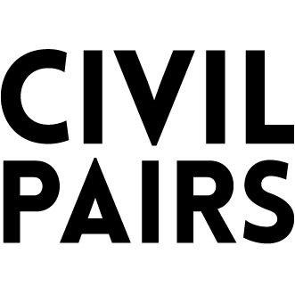

Uniformierte Zivilisten

Start
Civil Pairs

Civil Pairs is a card game in the context of Ziviluniformen Braunschweigisches Landesmuseum. All the cards are laid face down on a surface and the player flips two cards at each turn. The objective of the game is to find matching pairs of cards. Civil Pairs connects the cards to the digital dataset from the Braunschweigisches Landesmuseum, creating common ground in a fun way. Once played, the amazing artworks will remain in people's minds 1 1
(Click to Pause/Resume)
Civil Pairs
A card game about
Uniformierte Zivilisten
from
Braunschweigisches Landesmuseum
Der Ziviluniformbestand des Braunschweigischen Landesmuseums
wurde im Rahmen eines Forschungsprojektes umfangreich erforscht und dokumentiert.
Für Coding da Vinci Niedersachsen 2020 stellt das BLM einen
Ausschnitt aus diesem Bestand zur Verfügung,
der die komplexe Hierarchisierung in der Gesellschaft des 19. Jahrhunderts zeigt.
Nach der Einführung von Ziviluniformen im Umfeld der französischen Revolution
führten alle deutschen Staaten bis in die 1830er Jahre eine Beamten-Uniform ein.
Die Uniformierungen standen in Verbindung mit der Gründung des
Deutschen Bundes und waren optisch eine Vereinheitlichung der Beamten als Reaktion
auf das herausragende Renommee des Militärs.
Neben den Beamtenuniformen für den alltäglichen Dienst,
verfügten Beamte des gehobenen und höheren Dienstes
über Galauniformen für besondere Anlässe.
Die Galauniform dokumentierte die Hoffähigkeit ihres
privilegierten Trägers in der ständischen Gesellschaftsordnung.
Das Herzogtum Braunschweig gehörte bei der Einführung
von Ziviluniformen zu den »Nachzüglern«:
Die 81 Uniformbestandteile des Datensets fallen in den Zeitraum
zwischen Mitte des 19. Jahrhunderts und dem Ende des Herzogtums im Jahr 1918.
Das Datenset umfasst zum einen Fotografien von vollständig rekonstruierten
Uniformensembles (bestehend aus Hose, Uniformrock,
Kopfbedeckung, ggf. Weste und Seitenwaffe),
die größtenteils sogar ihren ehemaligen Trägern zugeordnet
werden können, sowie zum anderen von einzelnen Uniformröcken und Livreen.
as eigenständige Design der Uniformen verweist auf den Versuch,
die braunschweigische Identität vor allem gegenüber Preußen zu bewahren.
Für unser Spiel »civil pairs« verwendeten Mediendateien sind ein Teil
aus diesem Gesamtfundus der Vielzahl von Mediendateien.
Danke für diese Daten, die für Coding-Da-Vinci-Hackathon, Region Niedersachsen
zur Verfügung gestellt wurden und in unser Spielvergnügen integriert sind.
In einem spielerischen Zugang werden User*innen
die Inhalte des Datensatzes offeriert.
Einmal gespielt, bleiben die faszinierenden Einblicke in die
Vielzahl der Inhalte sofort visuell in den Köpfen verhaftet.
Unsere gemeinsame Arbeit und die Arbeit mit dem Material
der Karten bilden für uns eine stete Quelle der Inspiration.
Gameplay by
Niels Elburg and Arianna Doris Ahlgrimm
Special thanks to Coding Da Vinci 2020 Niedersachsen
Special thanks for sound go to
f4ngy, for "Card Flip" and "Bridging Cards"
qubodup, for "Puzzle Error"
(Click to Pause/Resume)